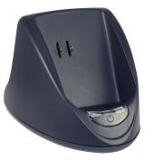
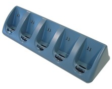

| Image |   | ||||||||||||||||||||||||||||||||||||||||||||||||||||||||||||||||||||||||||||||||||||||||||||||||||||||||||||||||||||||||||||||||||||||||||||||||||||||||||||||||||||||
| Dip-switches |
CRD-9723You can find the DIP switch bank under the rectangular black plastic cover at the bottom of the CRD-9723.
CRD-9723 multi cradleYou can find the DIP switch bank under the rectangular black plastic cover at the bottom of the CRD-9723 multicradle. The RS232 cable or the USB cable can be used. When using the USB cable a device driver needs to be installed. Note that the PX35 are not supported by this cradle.
The fixed baudrate settings work for RS485 and RS232. In auto baudrate mode the baudrate is controlled by the application on the host.
|
||||||||||||||||||||||||||||||||||||||||||||||||||||||||||||||||||||||||||||||||||||||||||||||||||||||||||||||||||||||||||||||||||||||||||||||||||||||||||||||||||||||
| CRD9726 |
CRD9726The CRD9726 is a charging and modem cradle for the OPL-style terminals. Data is transmitted to a remote host through a dialup connection via a normal telephone cable. The CRD9726 is equipped with an IrDA interface allowing data transfer when the scanner is inserted for charging. Terminal applications that wish to communicate with remote hosts over the dialup connection must use the TCP/IP library, provided in this kit. |
||||||||||||||||||||||||||||||||||||||||||||||||||||||||||||||||||||||||||||||||||||||||||||||||||||||||||||||||||||||||||||||||||||||||||||||||||||||||||||||||||||||
| CRD9727 |
CRD9727The CRD9727 is a charging and GSM modem cradle for the OPL-style terminals. Data is transmitted to a remote host through a cellular data connection to the Internet. The CRD9727 must be provisioned with an active SIM card to make a cellular data connection. The CRD9727 is equipped with an IrDA interface allowing data transfer when the scanner is inserted for charging. Terminal applications that wish to communicate with remote hosts over the cellular connection must use the TCP/IP library, provided in this kit. |